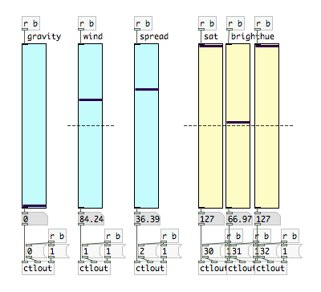
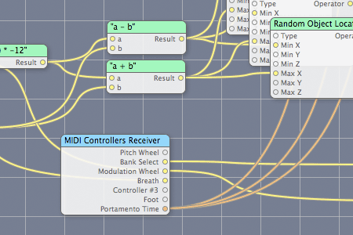

Recently I performed with a musical group, creating generative imagery as a backdrop. I decided try using quartz composer again, primarily because it renders graphics so quickly and smoothly, but also because it’s fairly easy to put something together. Unfortunately I ran into a significant roadblock. Quartz composer has no way to control elements while they are running. Although you can completely restructure and modify your script while it is running, there are no interface elements to control simple changes in values. Obviously, this makes QC so much less valuable as a performance tool.
Having already set up most of my script in Quartz Composer I decided to find a way to control it some other way. Pure Data, an application similar to Quartz but for the production of sound, allows you to easily build interfaces. The data is then sent out of pure data as midi controller values, sent through a virtual midi channel, and grabbed by Quartz Composer. From there the values can be used for whatever is necessary.
Figuring out the details took a little while and some help from my friend Michael Scoot-Nelson, but the setup is actually quite simple. In Pure Data, just set up as many controller as you need in the form of sliders or other UI elements.

In this case, I have a number of vertical sliders labelled for a particular application. Above each controller I have an object which receives a bang [r b]. In Pure Data the value from each slider is only sent when the slider is changed. Sending a bang to the value ‘b’ pushes all the values down and sends them out to the midi channel. The Sliders should be set to a range from 0-127.
The values from the sliders are plugged into the first inlet of control out objects (ctlout). The ctlout objects also need a controller number and a channel number. These are used to get the value on the other end. The channels can all be set to one, and each slider should have it’s own controller number.

In Quartz composer, a ‘Midi Controller Receiver’ object will grab the values sent from Pure Data. Viewing it’s settings in the inspector, the number of inputs can be changed. Each input is listed with an integer, these are the controller numbers which must be matched to the ones set in pure data. The channels being received can also be changed.
There is one final step to getting everything hooked up. In Pure Data, under Preferences > Midi Settings must be set to an Midi Channel that Quartz Composer is listening for. On a Mac it’s easy to set up this channel with the IAC Driver in Audio Midi Setup.

I also created this little guy here. One element I was controlling in Quartz Composer (a particle generator) could only be set on or off and I needed it to vary smoothly. This creates what is essentially a pulse width modulation simulated analog output. Pressing the ‘on’ and ‘off’ buttons do just that, and pressing the pwm toggle lets you use the slider to set it more or less on.
Metro’s turn the output to on every tenth of a second. It is then turned off (ten times a second) after a short delay (less than a tenth of a second). If the slider is at the bottom it turns back off almost immediately, so for the greater part of a second it is off. If the slider is at the top, it takes nearly a tenth of a second to turn back off, so it is mostly on. In the middle it will be on half the time. The result, at least for my particle generator, was the appearance of it’s rate changing while really it was just turning on and off very quickly. I’m not sure where else this would be useful, but here it is.
It might be a little hard to read, but if it would be useful to anyone I can upload the pd file somewhere.
Post Page » Quartz Composer is a Mac Application for visual programming. The program allows anyone to create interactive scripts which can be exported as a Quicktime movie or used as a screen saver. It allows for just about any input–mouse, audio, keyboard–although some some of these won’t work when run in some contexts. To make my critique brief: Quartz Composer is quite fast and powerful and the interface is very usable. Anyone with or without any programming knowledge could create something that looks nice if they play around with it long enough. Ultimately, however, it is very limited. Even if it may seem at first like it could do anything, if you are a creative soul you will find you can only realize your visions if they happen to be doable with one of the prefabricated filters or effects.
Quartz Composer is a Mac Application for visual programming. The program allows anyone to create interactive scripts which can be exported as a Quicktime movie or used as a screen saver. It allows for just about any input–mouse, audio, keyboard–although some some of these won’t work when run in some contexts. To make my critique brief: Quartz Composer is quite fast and powerful and the interface is very usable. Anyone with or without any programming knowledge could create something that looks nice if they play around with it long enough. Ultimately, however, it is very limited. Even if it may seem at first like it could do anything, if you are a creative soul you will find you can only realize your visions if they happen to be doable with one of the prefabricated filters or effects.